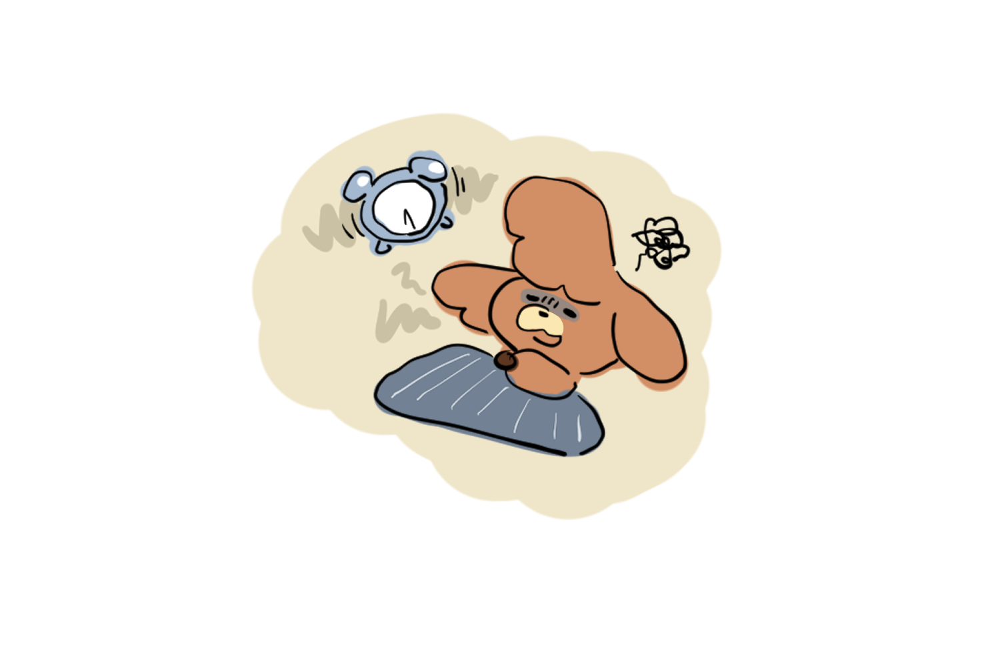
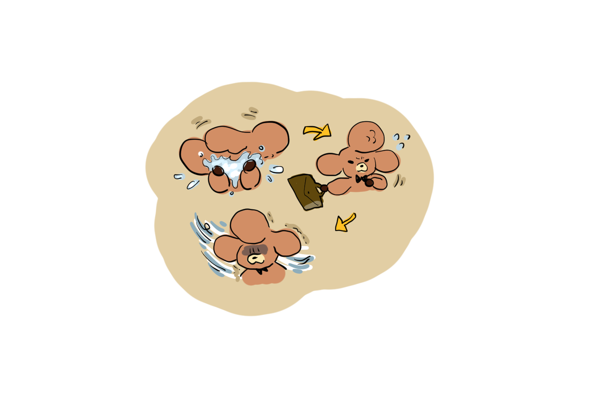
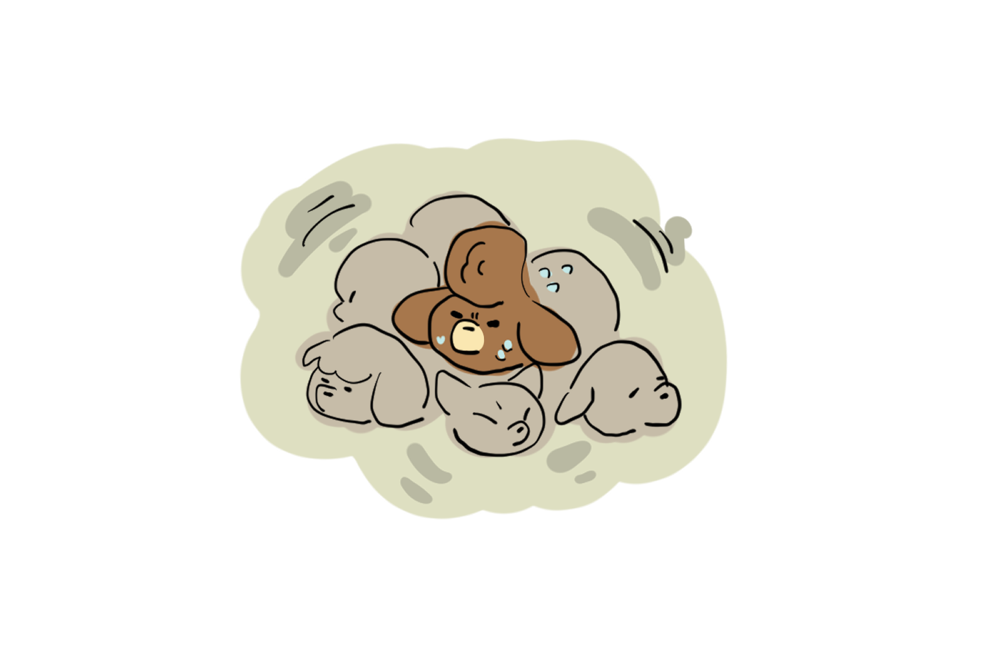
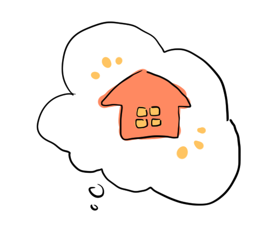
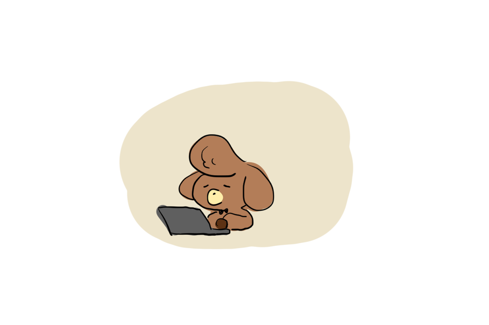
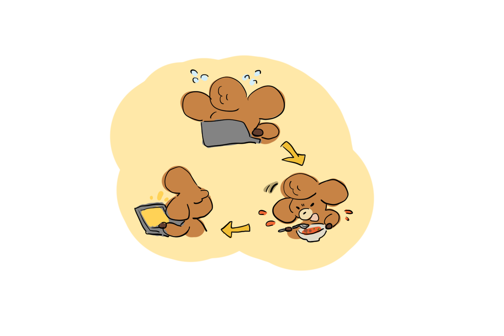
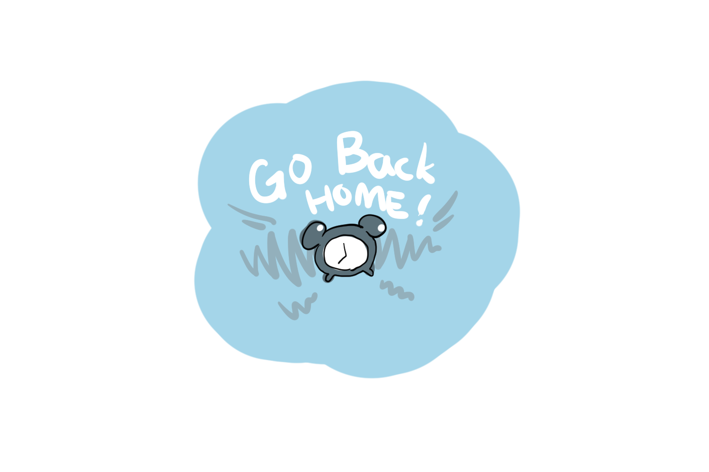
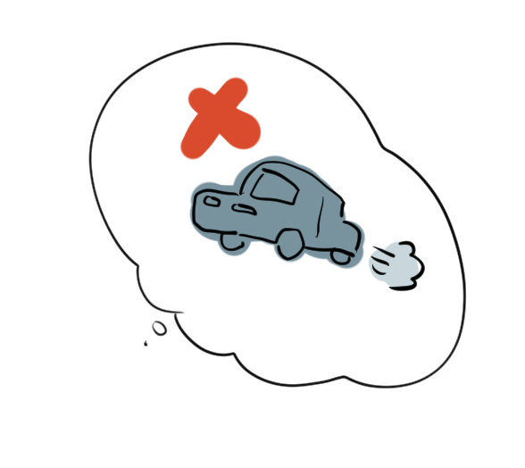
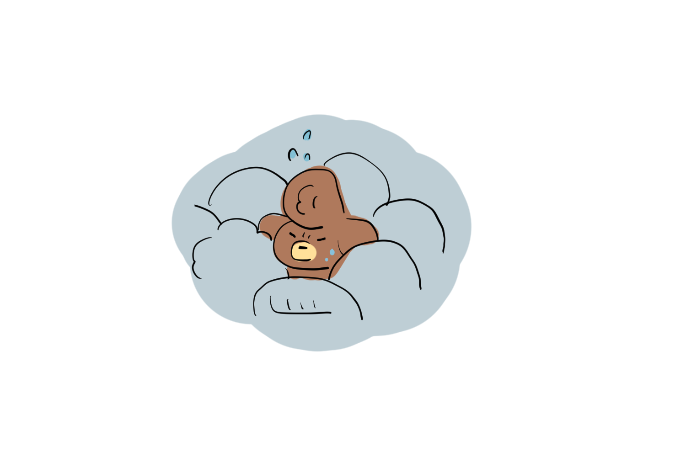
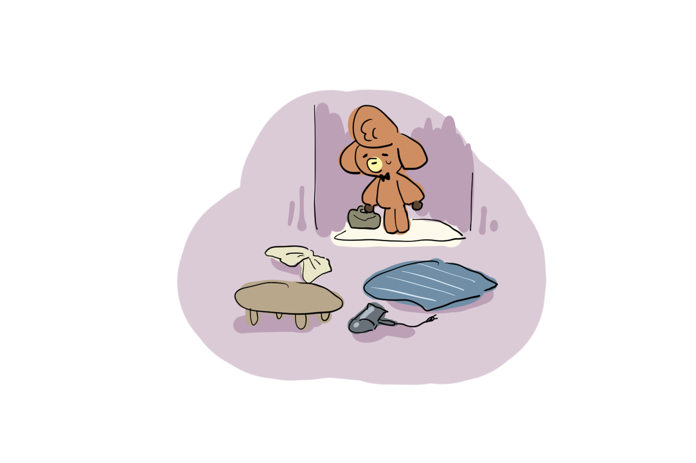
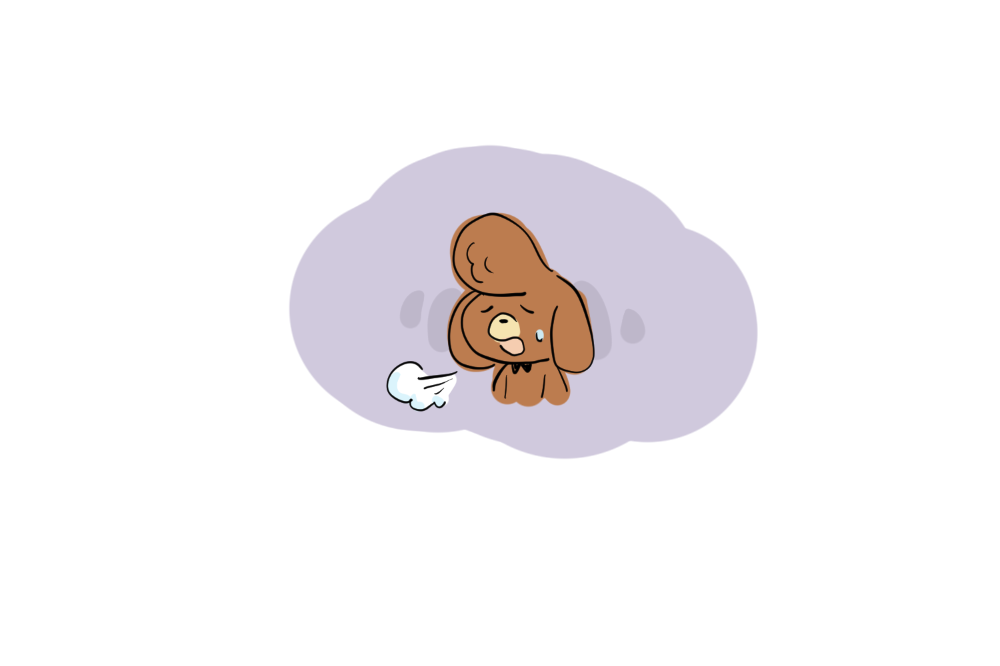
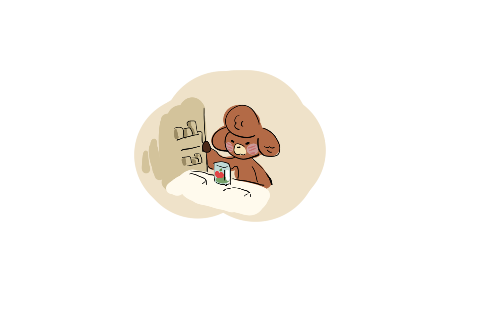
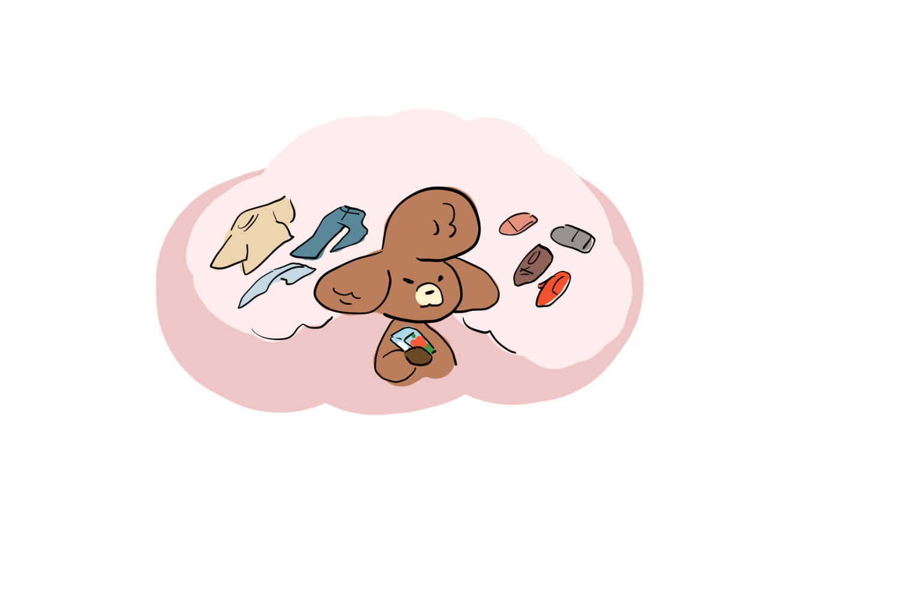
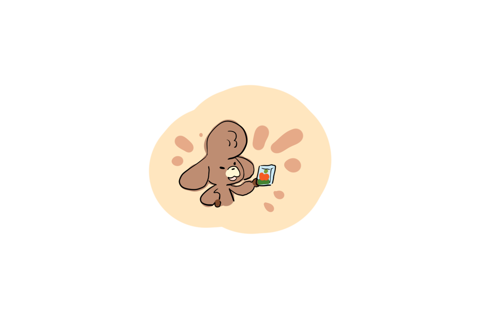
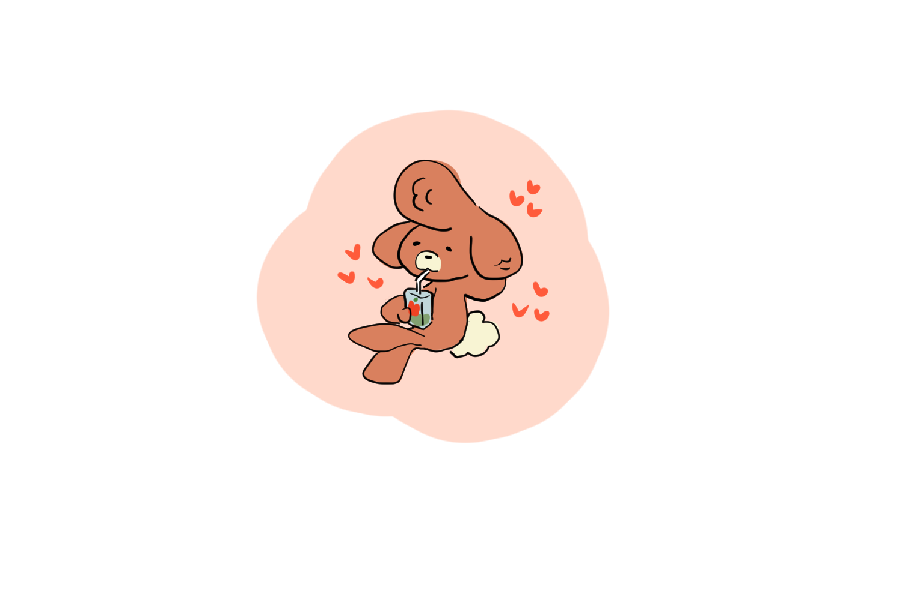
아침 6시, 어김없이 핸드폰에 맞춰둔 알람벨이 귓가에 내리친다.
서둘러 세수를 하고 머리도 빗고 주섬주섬 옷을 찾아 걸치곤
가방을 챙겨 나오면 새벽의 차가운 공기에 몸이 부르르 떨린다.
아무리 일찍 출발해도 대중교통엔 사람들이 북적북적 가득하다.
호떡이 될 것 같은 걸 버티다보면 겨우 목적지에 도착한다.
책상에 앉아 필요한 것들을 꺼내고 작업을 시작하면
벌써부터 집에 가고싶단 생각에 일이 눈에 안들어온다.
일하고 점심먹고 다시 일하고
정신없이 일하고나면 어느새 집에 돌아갈 시간이 찾아온다.
아침이랑 다를바 없이 사람들 사이에 낑겨서 집으로 되돌아온다.
이럴땐 자가용이 있으면 좋겠다는 생각을 하지만
자가용도 퇴근시간엔 그닥 빠르지 않을것 같다.
비틀비틀 하루 일과를 끝내고 집에 겨우 도착해 들어오면
아침에 급하게 나가느라 정리하지 못한 집안 꼴이 나를 반긴다.
오늘 하루 내내 고생했는데 집안일까지 해야한다니
한숨이 푸욱 나온다.
이럴 때 나는 해야하는 모든 일을 잠시 내려두고
냉장고에서 사과주스 하나를 꺼낸다.
주변에 널린 옷가지들
얼레벌레 짝이 다르게 놓인 신발들
해야할 일 투성이지만
조금은 쉬어도 괜찮아!
오늘을 열심히 살아온 나에게 사과주스 한잔의 여유는 괜찮아!
쪼옵!